Claims QA is an AI-powered B2B SaaS platform that helps Zurich detect incorrect payments on customer claims. Thanks to AI, the analysis has been significantly optimized and very high amounts in need of correction have been identified. I led the product design together with the Product Owner, and we continue to iterate constantly.
+$2.1M
Detected in incorrect or out-of-range payments in the UK alone between 2022 and 2026
+215%
Cases analyzed in search of discrepancies, compared to 2025
73%
Of users have adopted the platform in its beta version
Claims QA is an AI-powered B2B SaaS platform that helps Zurich detect incorrect payments on customer claims. Thanks to AI, the analysis has been significantly optimized and very high amounts in need of correction have been identified. I led the product design together with the Product Owner, and we continue to iterate constantly.
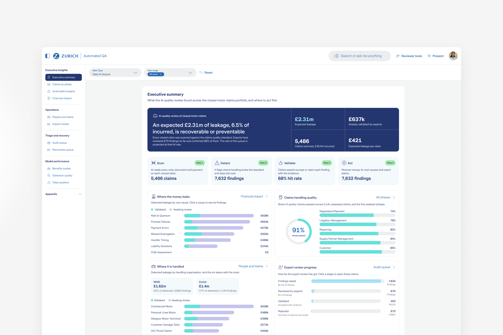
Context
Every day, claims occur where the company has to cover expenses and make payments to its customers and partners. It is very common for payments to be made that are not due, or far higher than necessary, causing significant losses for the company. Thanks to Claims QA and the use of Artificial Intelligence, we are constantly analyzing active and closed policies and claims to optimize the payments made, not only for claims that have already occurred but also for potential future ones.
Understanding the need
Through research and user interviews, we analyzed the current flows used to detect this type of incident. The large volume of claims, combined with processes that are partly manual and partly non-standardized, revealed that thousands of cases cannot be analyzed in time, or even identified.
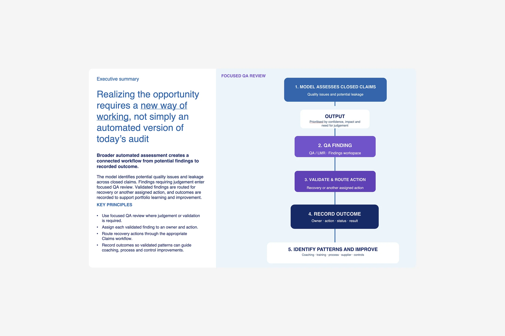
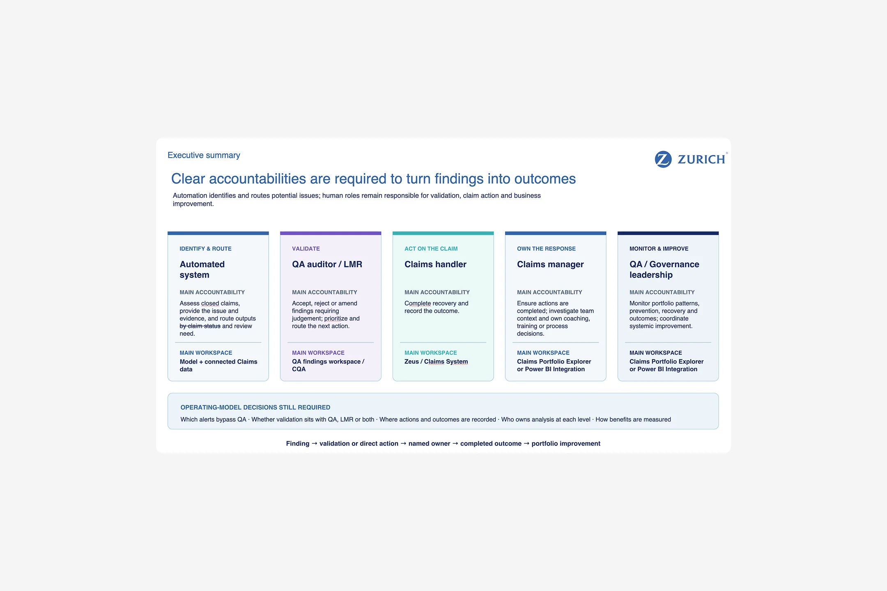
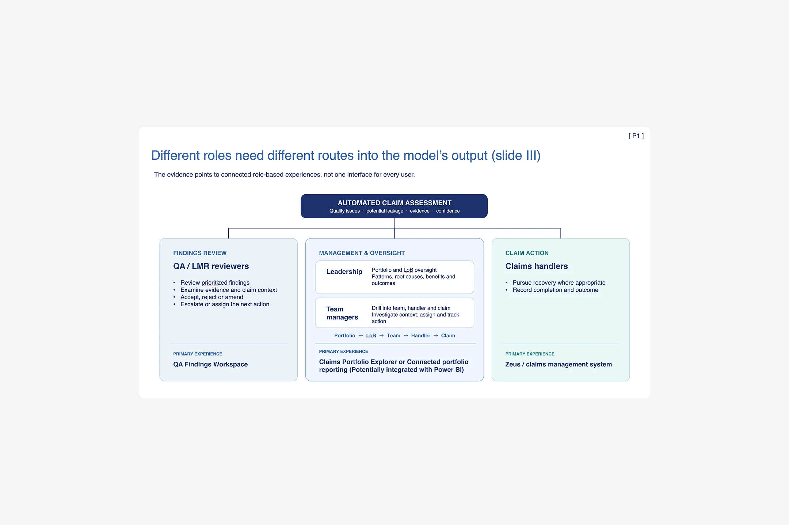
A new logic that fits the need
User feedback made us understand that the goal is not to automate the current process, but to redesign its logic so that issues can be detected in time and also anticipated ahead of policy renewals, so they don’t happen again.
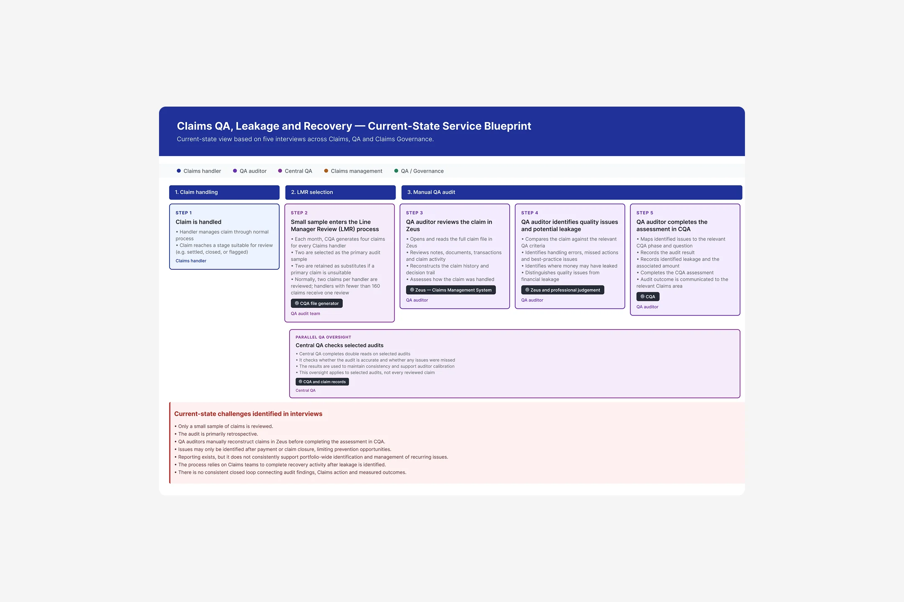
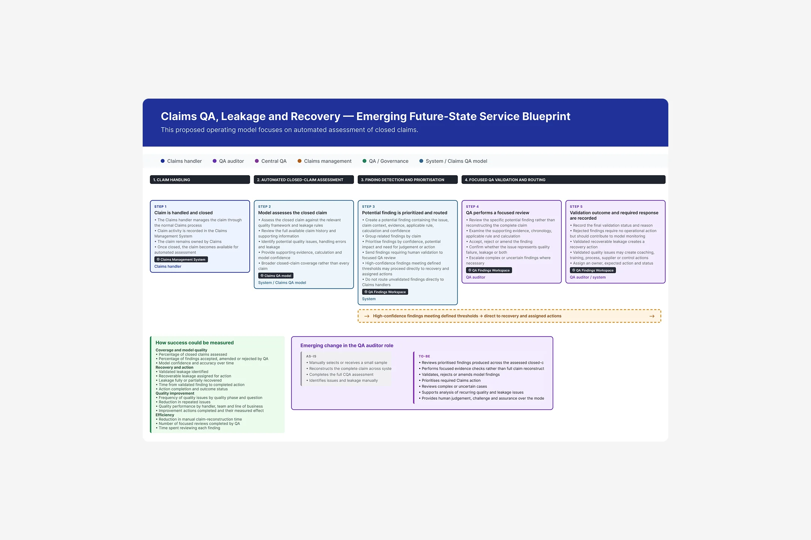
Vibe coding for living prototypes
Thanks to vibe coding, we were able to create navigable prototypes for user testing. On a platform this complex, with such high data density, giving users the freedom to navigate the product was essential to understand how they expect to work with this data.
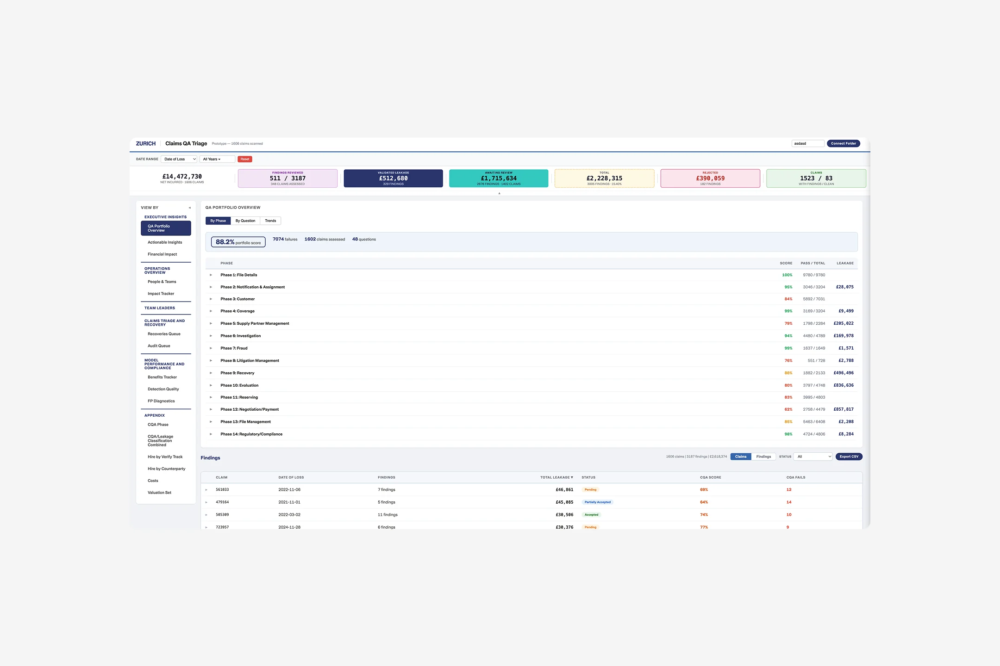
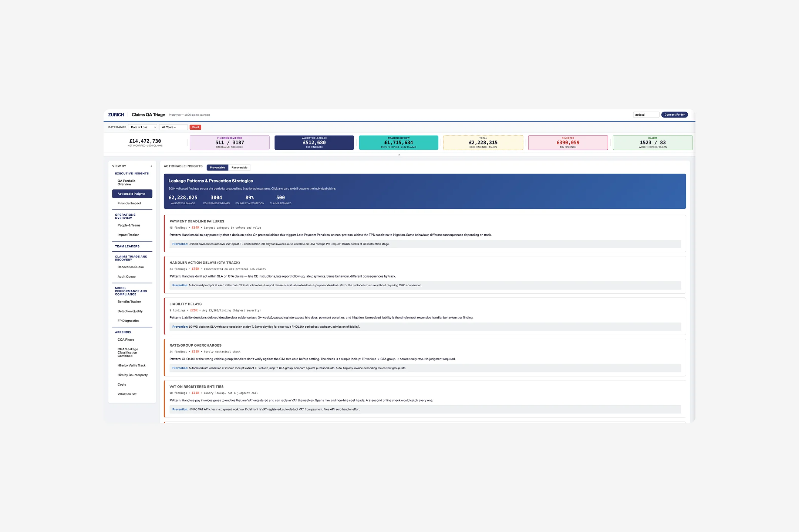
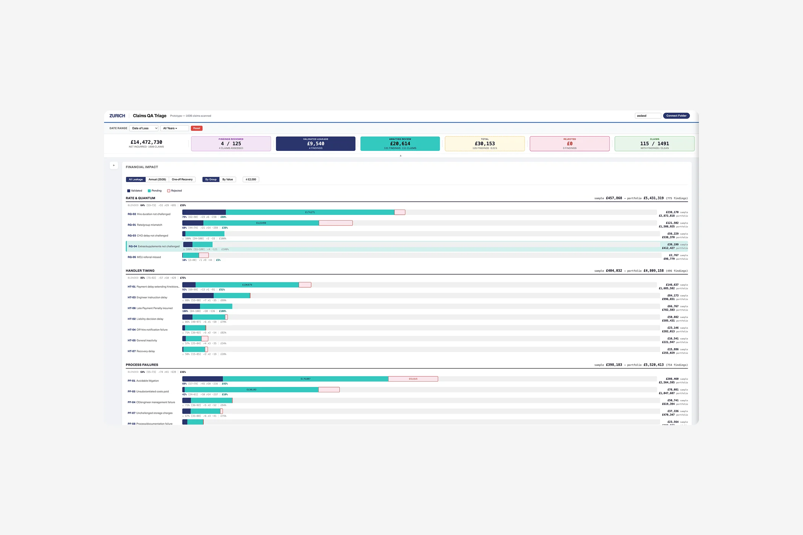
First version of the platform
After iterating and defining the platform launch, we aligned the design with Zurich’s standards and design system. Internal tools follow a similar navigation and usability logic, so users don’t have to learn from scratch how to use the tool.

Flexibility for every type of user
Because of the high volume and complexity of the data the platform handles, we designed dynamic data panels that users can show or hide, and they can choose to view content side by side or stacked. This flexibility lets us adapt to different ways of working.
Grouped content and action phases
For technical users, we designed information views divided into specific sections, allowing them to dig deeper or stay higher-level on each case as needed. Creating reports is a step-by-step flow that lets users act directly on the problem and deliver the solution. Using color to distinguish AI-generated data, database data, and the user’s own data speeds up the task.
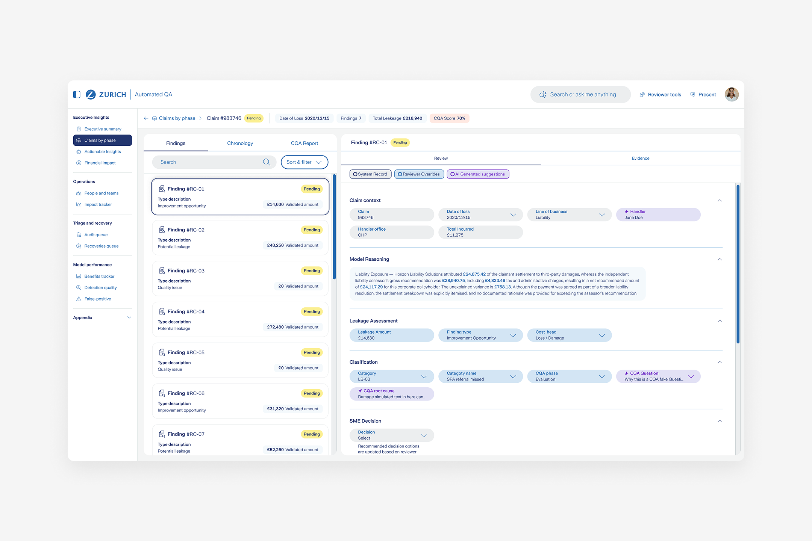
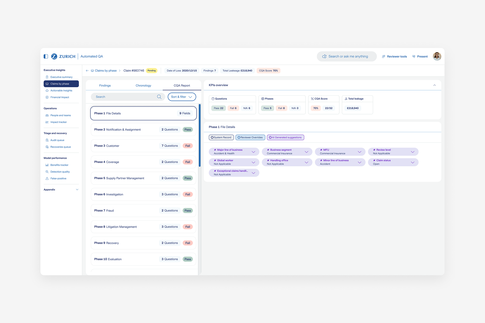
The right information for each user
The platform is used by technical users, managers, and department leads, so information is organized by what each of them needs to see and at what level of depth. Charts speed up the interpretation of data and the actions to take at each level.
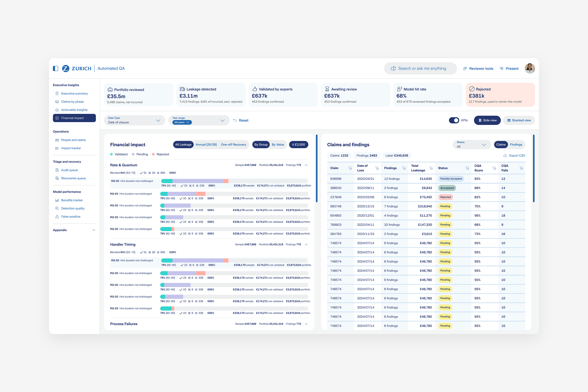
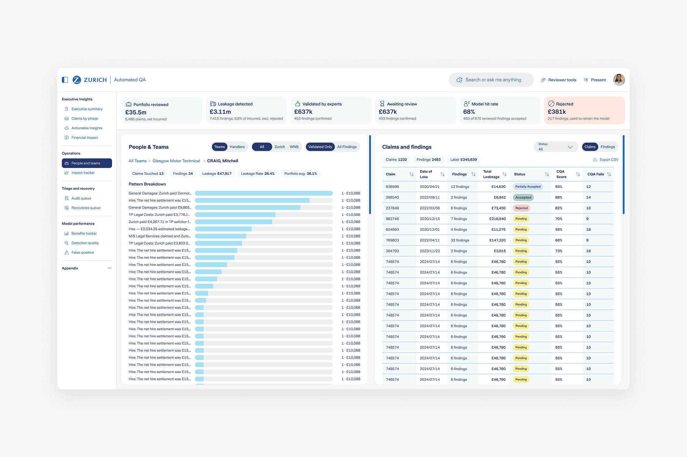
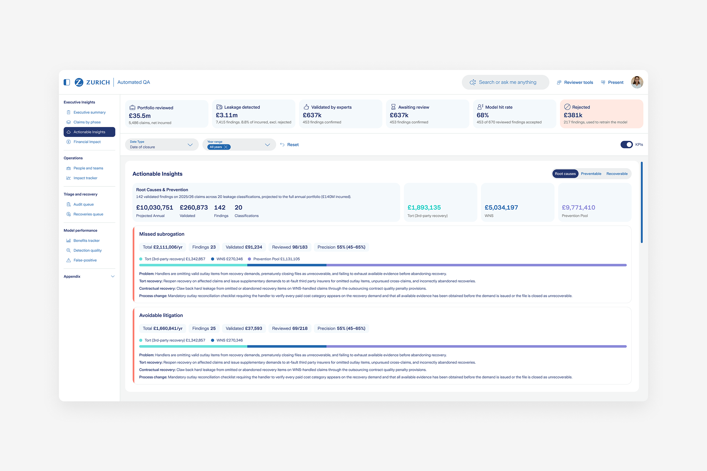
AI assistance for every user
On top of that, every user has an AI assistant that can search for information, classify data, and generate reports, so they can go from a question to an action without leaving the platform.
Business impact
+$2.1M
Detected in incorrect or out-of-range payments in the UK alone between 2022 and 2026.
+215%
Cases analyzed in search of discrepancies, compared to 2025.
73%
Of users have adopted the platform in its beta version.
Conclusions
Designing internal platforms is a real challenge because there are many variables to align. It’s not just UX and UI, but also business, legal, and technical feasibility. Working closely with the different levels of users has been a key step in understanding each need from their point of view, with the clear goal of solving the same problem together. Users have been very positive throughout, which has been a pleasure, because they help drive continuous improvement toward a tool that lets them do their jobs better.
Note: some data here has been adjusted for confidentiality and may not be fully exact.